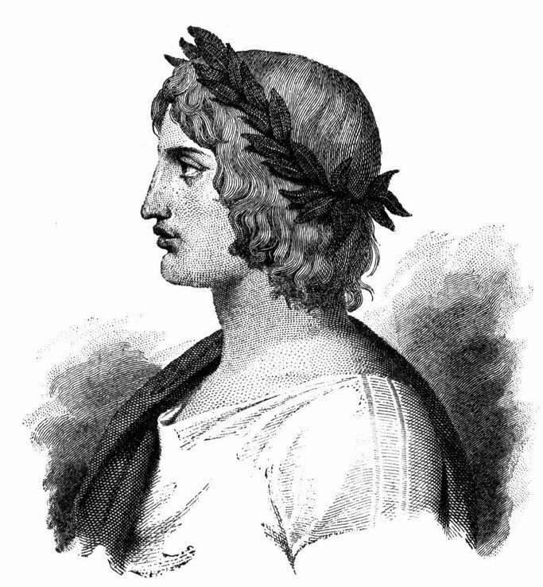
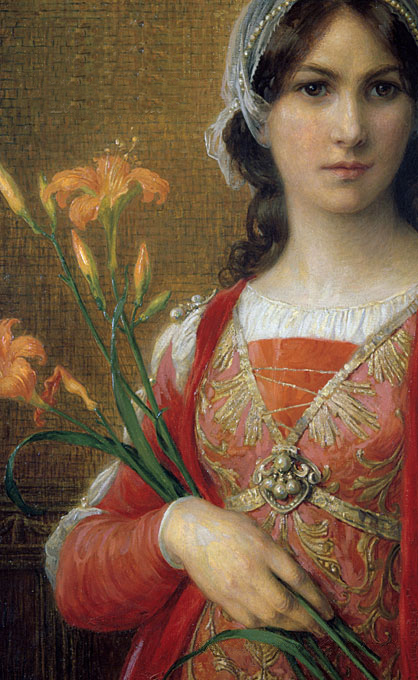
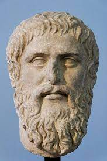
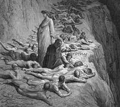

He journeys through the mountain of purgatory
and gets taught moral lessons, which lead to his
spiritual transformation, causing him to have
his soul purified from his sins.
He is the one who guides/teaches Dante
inorder to be free from his sins, but
later leaves his side as he accomplishes that.
She gets introduced in person towards the end of the canticle
and she also becomes Dantes new guide,
as they are about to enter Paradiso.
He stands guard at the start of mount purgatory
who only allows entrance to Dante/Virgil
after following his intructions of cleansing
himself of "stains of infernal region."
There are many souls who are on mount purgatory
who are repenting for their sins
in order to reach God's Kingdom one day.




